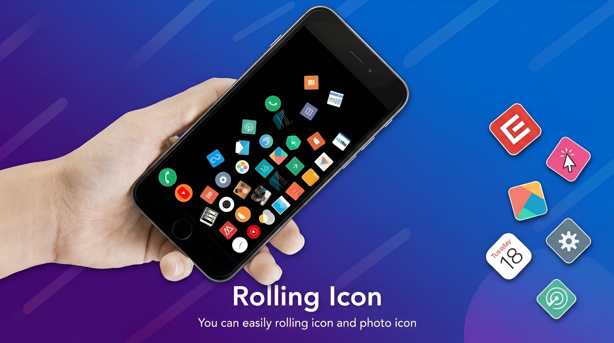
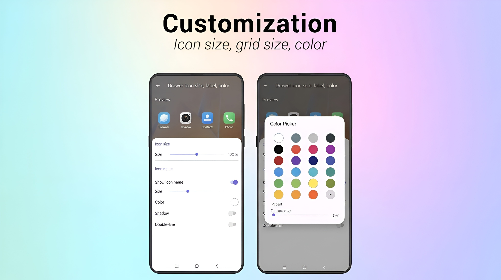
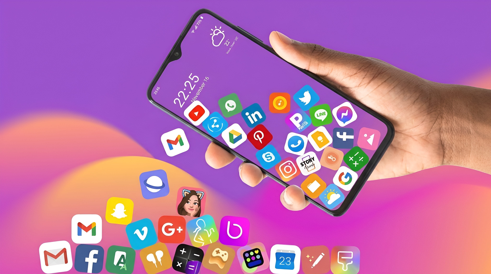

Most phone home screens use app icons that stay in fixed positions. Rolling Icon offers a different experience. It lets app icons and photo icons roll around the screen when you interact with them, adding motion, gravity, and playful visual effects to your phone.
You can move your finger across the screen and watch the icons respond with rolling movements. The icons can collide with one another and create spark effects. You can also set the experience as a live wallpaper to bring the rolling effect to your launcher or home screen.
Rolling Icon also gives you control over the look of the experience. You can choose which icons to use, how many to display, how large they should be, and which background you prefer.
What Is Rolling Icon?
Rolling Icon is a mobile customization app focused on animated app and photo icons. Instead of leaving the selected icons still, it lets them move and roll in response to touch gestures and gravity effects.
The app is designed for people who want a more playful screen. Its main experience combines rolling movement, collisions, and small spark animations. You can also customize the icons and background to create a setup that suits your taste.
Key Features of Rolling Icon
1. Roll Icons With Gestures
The gesture feature lets you interact directly with app icons and photo icons. Move your finger across the screen and the icons respond by rolling and moving. This makes the screen feel more interactive than a layout made up of motionless icons.

2. Gravity-Based Movement
Rolling Icon uses gravity effects to give the icons a more natural style of movement. As the icons roll around, gravity influences how they move across the screen, helping create the feeling that they are small objects rather than flat pictures.
3. Collision and Spark Effects
When icons meet, they can collide with one another. The app adds small spark effects to these interactions, making the movement more noticeable and fun to watch. The combination of rolling, collisions, and sparks is one of the app's most distinctive visual features.
4. Use App Icons and Photo Icons
The rolling experience is not limited to app icons. Rolling Icon also supports photo icons, giving you another way to personalize what moves around your screen. You can choose the icons and pictures you want to include in your setup.
Customize Your Rolling Icon Setup
One of the app's main attractions is that you can make the setup your own. Rather than using one fixed arrangement, you can adjust several parts of the experience.
Choose Which Icons to Use
Select the app icons or photo icons you want to see in the rolling experience. This lets you decide which items become part of the animation.
Set the Number of Icons
You can choose how many icons to include. Use the number that gives you the kind of screen you prefer, whether you want a smaller group or more icons moving together.
Adjust the Icon Size
The app lets you decide how large the icons should appear. Change the size to create the look you want for your rolling screen.
Choose the Background
You can also select the background for the experience. Try a background that works well with your chosen icons and photos.

Use Rolling Icon as a Live Wallpaper
Rolling Icon can also be set as a live wallpaper. This brings the rolling experience to your phone's launcher or home screen, so the animated effect is not limited to the app itself.
After setting it as a live wallpaper, you can enjoy the selected rolling icons as part of your phone's home screen. The exact wallpaper-setting steps may vary depending on your Android device, so follow the options shown by your phone when applying it.

How to Use Rolling Icon
You can start by setting up the icons and appearance you want. The available controls may look different between app versions, but the general process is straightforward.
- Open Rolling Icon on your phone.
- Choose the app icons and photo icons you want to use.
- Set how many icons you want to include.
- Adjust the icon size to your preference.
- Choose a background for the rolling experience.
- Try moving your finger across the screen to see the gesture and rolling effects.
- If you want the effect on your home screen, use the live wallpaper option and follow your device's instructions.
Who Should Try This App?
Rolling Icon may appeal to people who enjoy customizing their phone's appearance and trying interactive visual effects. It is especially interesting if you like animated icons, gesture-based interactions, or live wallpapers.
The app is mainly about visual customization and entertainment. If you prefer a simple, still home screen, its moving icons may not be the style you want. But if you enjoy experimenting with your phone's look, the rolling effects offer something different to explore.
Frequently Asked Questions
What does Rolling Icon do?
Rolling Icon makes selected app icons and photo icons move and roll with touch gestures and gravity effects. It also includes collisions, spark effects, customization options, and live wallpaper support.
Can I move the icons with my finger?
Yes. The app supports gesture-based interaction, allowing the icons to respond when you move your finger across the screen.
Does Rolling Icon support photos?
Yes. The app description says that photo icons can be included along with app icons in the rolling experience.
Do the icons collide with each other?
Yes. The app includes collision effects, and collisions can be shown with small spark animations.
Can I use Rolling Icon on my home screen?
Yes. You can set it as a live wallpaper to bring the rolling experience to your launcher or home screen.
Can I choose the number and size of the icons?
Yes. You can choose which icons to use, how many to include, and how large they should appear.
Can I change the background?
Yes. The app lets you choose the background for your rolling icon setup.
Final Thoughts
Rolling Icon gives your phone a playful alternative to a traditional static screen. Its gesture-based movement, gravity effects, collisions, and sparks make app icons and photo icons more interactive.
You can also choose the icons, set their number and size, select a background, and use the experience as a live wallpaper. If you enjoy experimenting with your phone's appearance, Rolling Icon is an app worth exploring.
Browse more apps and software guides in the Apps & Software section on Zoon Labss.